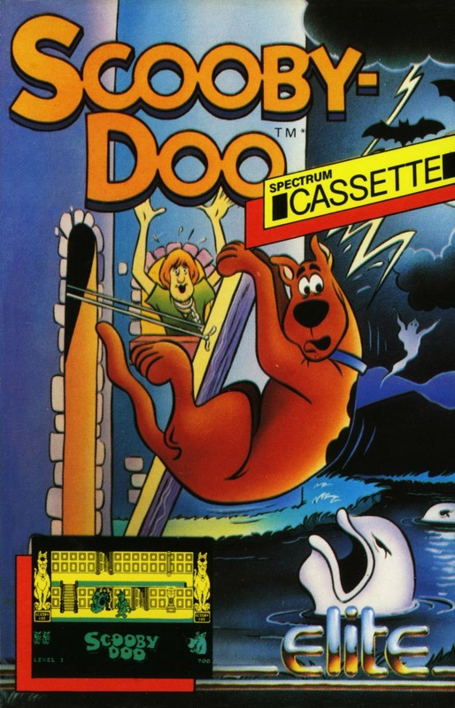
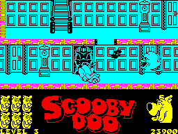
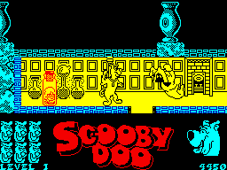
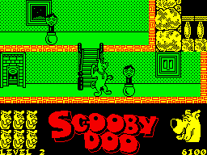

Scooby Doo


{kind=link}

| Publisher: | Elite |
| Price: | £7.95 |
| Year: | 1986 |
| Source: | CRASH, Issue 33 |

Yikes, Scooby Doo the cowardly pup with the voracious appetite suddenly finds himself in a tricky situation. Shaggy, Velma, Daphne, Fred and Scoob are driving along in the beaten up Mystery Mobile when a strange rattling beneath the bonnet forces them to pull over to see what’s wrong. “It’s no good,” said Freddie “we’ll have to get help from somewhere.” “What about that big castle over there?” said Velma pointing to a dark gothic house silhouetted against the moon. “We could knock at the door and ask them if there’s a garage or something nearby.” she continued. “Yeah, that’s fine, like Scooby and I will er wait in the van in case someone tries to uhh, steal it, right Scoob?” said Shaggy, looking distinctly nervous. “No, all four of us will go and Scooby can stay behind in the van,” said Velma. And the four of them started walking towards the dark forbidding looking castle, leaving Scooby sleeping in the back of the Mystery Mobile.
Little do they know but the castle on the hill is owned by a mad professor who likes nothing more than to lure victims back to his deserted lab and chop them up into little pieces and store them in specimen jars for future experiments. Double yikes!

Scooby ducks to avoid a bat. Soon he’s
going to have to cope with a marauding
Ghoulfish
And surprise, surprise that’s exactly what happens to Shaggy, Velma, Daphne and Fred. That dastardly professor ensnares the gang in his evil plan and leaves them, apparently trapped forever in his draughty, lonely castle.
And they’d still be there now if it wasn’t for that canine coward Scooby Doo behaving in most uncharacteristic manner and trying to release his pals from their predicament. Perhaps it was hunger that drove Scooby from the beaten up van, or maybe the eerie way the wind moaned around the roof. Whatever it was, Scooby decided to see what was going on inside the castle...
However, when Scooby enters the professor’s castle he has a shock in store for him. The castle seems to be haunted by all manner of nasty spooks and ghosties. He’s about to run back to the van for all he’s worth when he spots a Scooby Snack on the ground and realises that his friends must be in mortal danger.
There are four levels to the game and concealed on each level is one member of the gang trapped inside a specimen jar. Scooby has to locate his chums and release them.

that red phial. Can Scooby fight off
a Mad Monk and free his friend?
However, Scooby Doo encounters a strange array of beasties on each of the levels and they are all determined to stop him from releasing his friends. And of course these nasties are all controlled by the evil professor himself.
On the first floor of the castle — which contains Velma — Scooby encounters horrible floating ghoulies which jump out from behind closed doors and are very menacing to the poor pooch. Hooded figures sidle up to him silently and try and knock him off his paws. The only way which Scooby can defend himself against the nasty inhabitants of this castle is by using his cumbersome paws which come in very handy for bopping the spectres on the bounce. Scooby can only hit his victims if he’s not moving, and if they get him first he faints with fear and loses one of his six lives. When all these lives have been lost Scooby joins his friends as a future experiment for the professor. Evil cackle. However, Scooby can reclaim a lost life by picking up a Scooby Snack on the ground and eating it.
Level two of the castle is full of springy, sproingy things. These bounce out of cupboards and dumb waiters and sneak up on the dynamic doggy from behind. Skulls litter the floor and must be bounced over and floors are separated by ladders which must be climbed. But be careful ... the nasties have a habit of scooting down the stairs and knocking poor Scoob for six. Level three hosts some very wicked looking monsters. Ghoulfish float around exercising their huge elastic jaws. The ghosties from the first level make a re-appearance, and tatty bats screech around at head height causing Scooby to bend down and cover his eyes with fright!
The final level is guarded by bulbous monks with no faces. Flying dumbells and rolling bowling balls are just some of the hazards which Scooby has to negotiate in the quest to release the last of his chums.
At the beginning of each level Scooby gains an extra life, but lives lost in the previous level are not given back to him ... For once, this hungry dog gets the chance to play the hero.
CRITICISM

wobbly nasties on the second level...
“First time I saw this on the Amstrad, I thought that it was an extremely playable game. The Spectrum version is equally so, if not more. The scrolling isn’t super smooth, and the lack of tune is a little disturbing, but the graphics are excellently animated, and the game plays superbly. Addiction is almost certainly to be found, and the game represents very good value for money. Even though it’s been ages in the making, and the finished version is completely different from the screen shots seen all those long months ago, Scooby Doo is a really cool arcade game, well worth getting.”
“This is obviously not the game promised by Elite some time last year, but it was definitely worth the wait as it is tremendously playable and ever so compelling. The graphics really are first-class: the many large and well defined characters move around the castle admirably and the castle itself is very pretty. Sound wise this game rates fairly highly as there are many excellent spot effects during the game — sadly there isn’t a tune on the title screen but the front end is so good that a tune isn’t really necessary. I strongly recommend this game as it is addictive and great fun to play too.”
“After the long wait for Scooby Doo it would take something fairly special to justify the time spent on it. This game manages to impress after the first couple of goes but it doesn’t contain anything to keep the brain cells electrified for long. I found Scooby Doo looked very attractive to the eye and the idea of buffing and boffing all the characters — which didn’t look too much like ghosts — proved quite exciting for a while, but this required no real skill. The animation of all the graphics is very smooth and accurate, and the screen scrolling is very silky (!?!). Scooby sound is not very startling and has very little tunewise. The game bases itself on the TV series superbly with all the folks from the team in it. Unfortunately I didn’t find it extremely enthralling ... but it’s certainly playable. Have a look before you buy.”
COMMENTS
| Control keys: | Left, right, up/jump, down/duck, fire/punch — redefinable |
| Joystick: | Kempston, Cursor, Interface 2 |
| Keyboard play: | Very responsive |
| Use of colour: | Mainly monochrome |
| Graphics: | Excellent |
| Sound: | Neat effects; no title tune |
| Skill levels: | One |
| Screens: | Four scrolling levels |
| General rating: | Yet another highly playable game released by Elite |
| Use of computer: | 89% |
| Graphics: | 93% |
| Playability: | 92% |
| Getting started: | 90% |
| Addictive qualities: | 91% |
| Value for money: | 90% |
| Overall: | 91% |